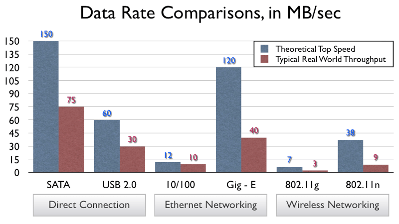

How to Improve Your Wi-Fi Speed: Tips and Tricks for Better Connectivity
By: Sofia
Upgrade Your Router
In today's internet-driven world, a slow Wi-Fi connection can be incredibly frustrating - whether you're streaming a movie or simply trying to browse the web. Fortunately, there are plenty of easy ways to improve your Wi-Fi speed without breaking the bank. In this article, we'll explore some of the most effective tips and tricks for achieving better connectivity, and focus in particular on one of the easiest and most essential upgrades you can make: your router.
Your router is the device that connects all your devices to the internet. It's essentially the central hub of your entire Wi-Fi network. So, upgrading your router can have a massive impact on the speed and reliability of your connection. But with so many routers available on the market, how do you know which one to choose?
First of all, it's important to consider the age of your current router. If it's more than a few years old, it might be time for an upgrade. Newer routers are generally faster and more reliable, and they come with more advanced features like beamforming and dual-band connectivity.
When choosing a new router, it's also important to consider the size of your home and the number of devices you have. A small apartment might only need a basic single-band router, while a larger home with multiple floors and a dozen devices might require a more advanced dual-band router with greater coverage.
Finally, don't forget to check your internet speed before and after upgrading your router. This will help you determine whether the upgrade was successful and give you an idea of how much of an improvement you can expect.
By following these tips and upgrading your router, you can significantly improve your Wi-Fi speed and achieve more reliable and efficient connectivity for all your devices. So what are you waiting for? Upgrade your router today and start enjoying a faster, more seamless internet experience!
ad space
Optimize Router Placement
Finding the perfect spot for your Wi-Fi router can be the key to unlocking faster internet speeds in your home. While some may think that throwing it anywhere will do the trick, the truth is that improper placement could be slowing down your connection significantly. In this section, we'll dive into the steps you can take to optimize router placement and get the best possible Wi-Fi speed.
First and foremost, it's essential to keep your router in a centralized location, free from any physical obstructions. Walls or large furniture can cause the signal to weaken or bounce, leading to slower speeds in areas further away from the router. Ideally, the router should be placed on a high shelf, mounted on a wall or ceiling, or at least positioned in an open space in the center of your home.
Secondly, you want to consider the distance between the router and the devices you plan to use. If you're accessing the internet on multiple floors or outside, it's best to position your router as high up as possible. This will extend the range of your Wi-Fi and allow for stronger signals in areas that are farther away.
Lastly, for those with larger homes or multiple floors, you may benefit from investing in additional access points or range extenders. These devices work by connecting to your existing network and broadcasting a new signal to different parts of your home, allowing for better coverage and faster speeds.
In conclusion, optimizing your Wi-Fi router placement is an essential step for anyone looking to improve their internet speeds. By centralizing your router in an open area, considering distance, and investing in additional devices when necessary, you can enjoy faster connectivity and a hassle-free online experience. Don't let slow Wi-Fi bog you down- try these tips and tricks today.
ad space
Reduce Interference
Nothing sounds more frustrating than a video buffering in the middle of a movie or a song abruptly stopping while streaming. The culprit is often poor Wi-Fi connectivity, which could be a result of varying factors, one of which is interference. Interference is broadly defined as any obstacle that affects the signal strength between your devices and your Wi-Fi router.
Thankfully, there are ways to reduce interference and boost your Wi-Fi connectivity, and this guide will show you how. Before exploring the ways to reduce interference, let's go through some of the common sources of interference. The following electronic devices could be compromising your Wi-Fi performance:
- Microwave ovens
- Cordless phones and other wireless devices
- Bluetooth devices such as speakers and headphones
- Other Wi-Fi networks within range
- Thick walls or metal objects such as doors, filing cabinets or bookshelves
- Halogen lamps, baby monitors, or security cameras.
Now that we have identified the most common types of interference, let's explore some tips on how to reduce them:
- Change the channel: Your Wi-Fi signal could be competing with signals from surrounding Wi-Fi networks. Changing the channel from the standard 2.4 GHz to a less crowded 5 GHz spectrum can help lessen Wi-Fi interference.
- Re-position your router: Placing your Wi-Fi router on a high and central location could help reduce Wi-Fi interference. Try to avoid placing your router close to walls or behind large metal objects.
- Purchase a Wi-Fi extender: These devices help to amplify and transmit the signals to areas that you previously had no or a weak signal.
Reducing interference is one of many tips and tricks to improve your Wi-Fi speed. The goal is to ensure that your devices are connected to the internet with strong signals, enabling seamless browsing, streaming and downloading. We hope these tips help you achieve just that.
ad space
Use Wi-Fi Extenders or Mesh Wi-Fi Systems
As our lives become increasingly dependent on technology, having a strong and reliable Wi-Fi connection has become more important than ever. Slow internet speeds can be incredibly frustrating, especially when trying to stream movies, download files, or simply browse the web. Fortunately, there are many things you can do to improve your Wi-Fi speed, and one of the most effective methods is to use Wi-Fi extenders or mesh Wi-Fi systems.
Wi-Fi extenders, also called wireless repeaters, work by receiving the wireless signal from your router and rebroadcasting it to areas of your home where the signal is weaker. This can be a great solution if you have a large or multi-level home, as it can help ensure that you have a strong signal throughout the entire space. Mesh Wi-Fi systems are another option that can be even more effective. They work by using multiple access points or nodes throughout your home to create a network that covers every corner of your space. Unlike Wi-Fi extenders, mesh systems offer a seamless transition between access points, ensuring that your devices stay connected and your speed remains fast and consistent.
While Wi-Fi extenders and mesh systems can be highly effective at improving your Wi-Fi speed and connectivity, it's important to choose the right solution for your specific needs. Consider factors such as your home's layout and size, your internet usage habits, and your budget when choosing between these options. Additionally, it's always a good idea to do your research and read reviews before investing in any Wi-Fi equipment.
Improving your Wi-Fi speed doesn't have to be complicated or expensive. By using tools like Wi-Fi extenders or mesh systems, you can enjoy fast, reliable internet throughout your home, no matter where you're located. So why suffer through slow Wi-Fi speeds any longer? Take action today and experience the benefits of a strong, consistent connection.
ad space
Update Your Software
In our fast-paced, technology-driven world, having a stable Wi-Fi connection is one of the most important things we need. Whether you're working remotely, streaming movies, or simply browsing the internet, a fast and reliable internet connection can make all the difference. However, if you're experiencing frequent lag times or slow downloads, it may be time to update your software to improve your Wi-Fi speed.
Software updates aren't just about adding new features or fixing bugs; they often include improvements to performance, stability, and security. Additionally, outdated software can lead to compatibility issues with newer hardware or applications, which can result in slower connection speeds.
To update your software, check for available updates through your computer's operating system, your router's firmware, or your ISP's online portal. Some updates may be automatic, while others may require a manual installation. Once installed, restart your devices to ensure that the changes take effect.
Updating your software isn't a one-time fix, however. It's important to regularly check for updates and install them when available to ensure that you continue to have a fast and secure Wi-Fi connection.
By taking the time to update your software, you can significantly improve your Wi-Fi speed and overall connectivity. This small step can make a big difference in your online experience and help you stay productive and connected, whether at home or on-the-go.
ad space
Conclusion
In this digital age, a strong and stable Wi-Fi connection has become an essential part of everyday life. Whether you are working, streaming, or gaming, a slow internet connection can be frustrating and have a significant impact on productivity and entertainment. Luckily, there are various tips and tricks you can implement to improve your Wi-Fi speed and experience faster and more reliable internet connectivity.
By following our guide to improving your Wi-Fi speed, you can enjoy streaming high-definition content or enjoy fast downloads without the frustrating lag times. We have covered a range of topics, including router placement, channel selection, password protection, and device updates. By implementing these tips, you can optimize your Wi-Fi speed and reduce the risk of frustrating disconnects and buffering times.
However, it's important to remember that not all Wi-Fi problems can be solved with a few simple tricks. If you have tried all our recommended tips and still experience slow Wi-Fi speeds, it may be time to consider upgrading your hardware or contacting your internet service provider. As technology evolves, it is essential to prioritize and invest in up-to-date equipment to ensure your Wi-Fi connection is reliable, stable, and delivers the speed you need.
In conclusion, by following our tips and tricks, you can optimize your Wi-Fi speed, reduce lag time and buffering, and achieve faster and more reliable connectivity. Remember to stay up-to-date with the latest technology and upgrade your equipment as necessary to ensure your Wi-Fi connection remains strong and stable. By investing in these best practices and considerations, you can enjoy the many benefits of fast and reliable internet connectivity.
ad space